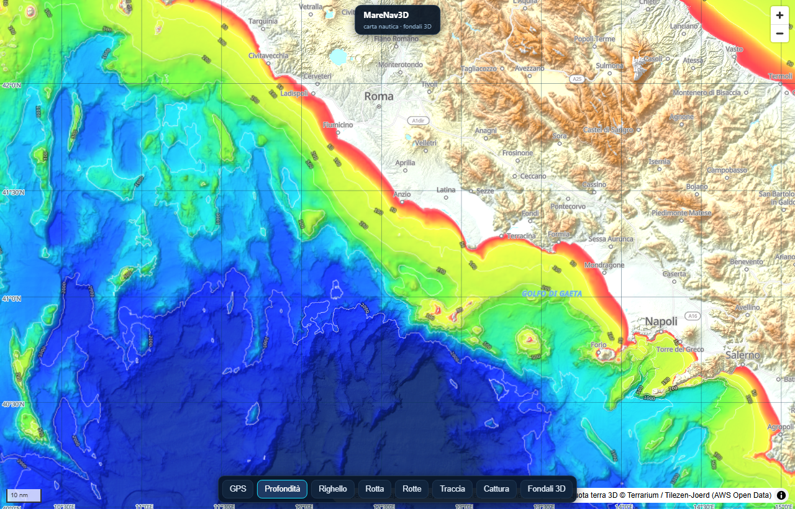
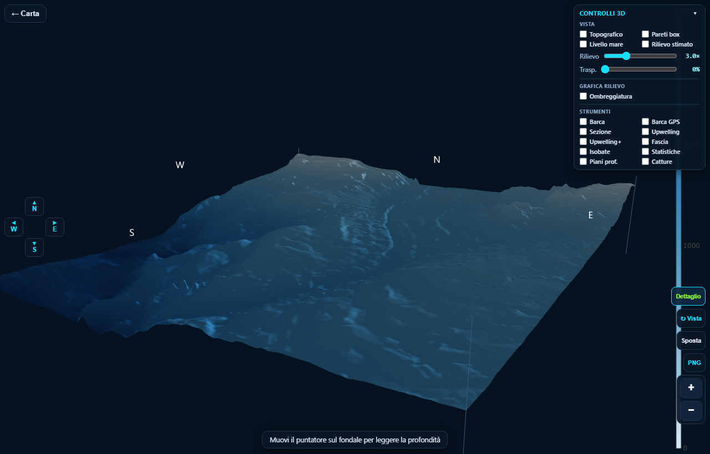
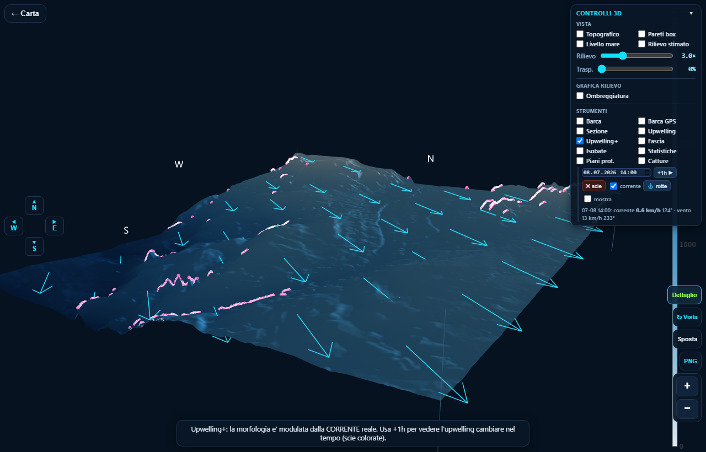
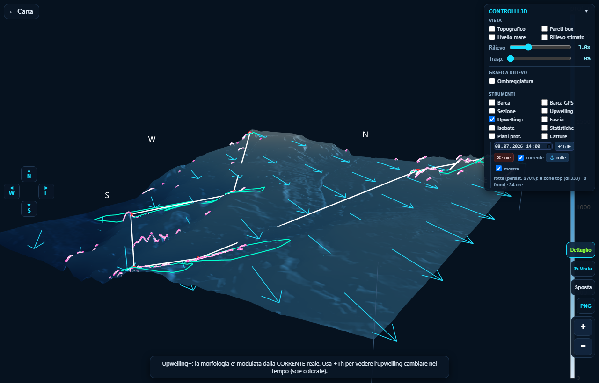
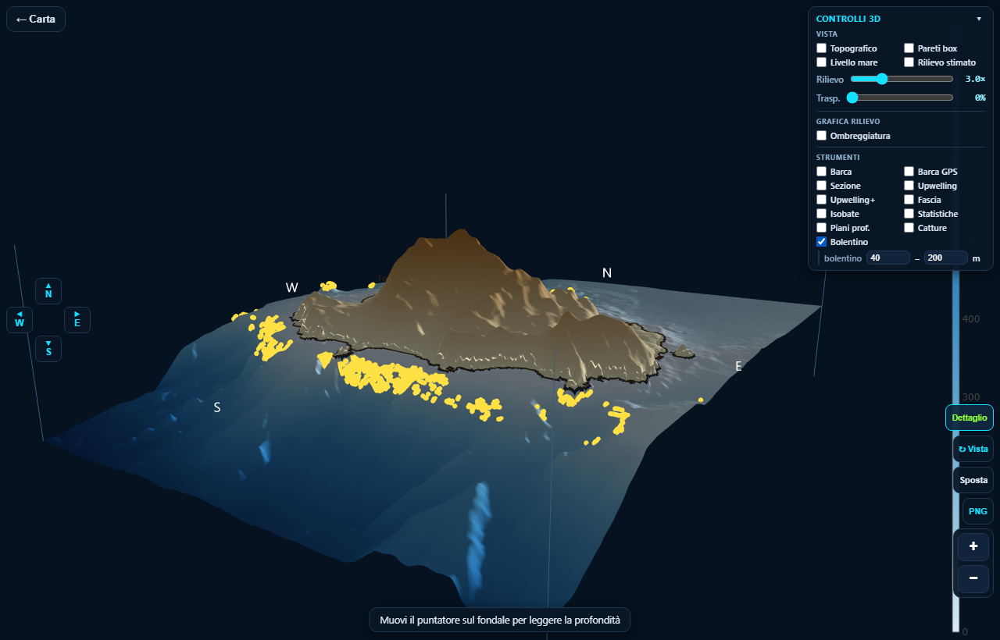
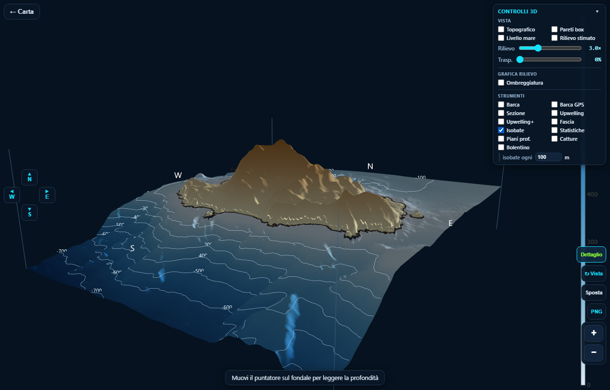

1 · Aprire una zona in 3D
All'avvio vedi la carta 2D. Per studiare il fondale in 3D:
- Inquadra la zona di mare che ti interessa (pizzica per zoomare / trascina per spostarti).
- Tocca/traccia l'area sulla carta: l'app scarica la batimetria e apre la scena 3D.
- Nel 3D: trascina per ruotare, rotellina/pizzica per zoomare. Il pulsante ← Carta in alto a sinistra torna alla mappa 2D.

2 · La scena 3D e il pannello controlli
A destra c'è il pannello CONTROLLI 3D, diviso in Vista, Grafica rilievo e Strumenti. In basso a destra: Dettaglio (risoluzione), ↩ Vista (rimette la vista utile), Sposta, PNG (salva immagine) e lo zoom + / −. La bussola N/S/E/W è a sinistra. Muovendo il puntatore sul fondale leggi la profondità.

Vista & Grafica rilievo
- Topografico — superficie unica con isolinee (stile carta topografica).
- Livello mare · Pareti box · Piani prof. — piani di riferimento.
- Rilievo (slider) — esagera la profondità per vedere meglio le scarpate.
- Ombreggiatura — luce/contrasto/direzione per far risaltare il rilievo.
- Isobate — curve di livello a profondità costante (intervallo regolabile).
- Fascia — evidenzia una fascia di profondità scelta (es. 80–120 m).
- Statistiche — area, profondità min/media/max, pendenza.
3 · Sezione batimetrica
Attiva Sezione e tocca due punti (A e B) sul fondale: ottieni il profilo verticale del fondale tra i due (distanza in miglia × profondità). Dopo aver messo B, i clic successivi non spostano più A. Il pulsante ↩ Vista sezione riallinea la vista se hai ruotato.
4 · Upwelling e Upwelling+ (con correnti reali)
Due strumenti per trovare le risalite d'acqua sul rilievo:
- Upwelling — solo morfologia: evidenzia scarpate ripide e banchi (indicatore statico, non dipende dal tempo).
- Upwelling+ — fisico: usa la corrente reale (Open-Meteo)
all'ora scelta e calcola la risalita al fondo
w = u·∇h(la corrente che risale la scarpata forza acqua verso l'alto).
Come usare Upwelling+
- Attiva Upwelling+: compare la riga con data/ora (default oggi 12:00) e si accendono le frecce ciano della corrente.
- Premi +1h ▶ per avanzare di un'ora: i punti della nuova ora appaiono in un colore diverso e quelli dell'ora prima restano come scia → vedi l'upwelling spostarsi.
- ✖ scie pulisce le tracce; corrente mostra/nasconde le frecce.
La dimensione del punto indica l'intensità della risalita; il colore indica l'ora.

5 · Rotte del giorno
Con Upwelling+ attivo, premi ⚓ rotte: l'app calcola l'upwelling di tutte le 24 ore del giorno e disegna due percorsi:
- Rotta hotspot persistenti (linea bianca + punti rossi) — collega le zone che risalgono più a lungo e più forte (persistenza ≥70%, solo le 8 zone migliori).
- Fronte (anello ciano) — il perimetro della zona produttiva, da trollare sul bordo.
La checkbox mostra accende/spegne le rotte; se cambi zona, ri-checkala per ricalcolarle.

6 · Catture reali (Ischia/Forio)
Attiva Catture per sovrapporre i waypoint storici di pesca reali (zona Ischia/Forio), colorati per specie. Tocca un punto per nome e profondità.
tonno alalunga spada foraggio mark GPS
7 · Bolentino (strutture di fondo)
Attiva Bolentino per evidenziare le strutture di fondo pescabili nella fascia di profondità scelta (default 40–200 m; puoi impostarla, es. 200–600 m per il bolentino di profondità). A differenza dei pelagici, qui l'upwelling di fondo è fisicamente pertinente (pesce demersale su struttura bassa). Ogni spot indica il tipo e la profondità:
- secca / cappello — rilievo convesso (la cima di un banco).
- ciglio / scarpata — rottura di pendenza (il bordo di un salto).

8 · Isobate con quote
Attiva Isobate per le curve di livello a profondità costante sul fondale.
L'intervallo è regolabile con isobate ogni … m (es. 50, 100, 200 m). Ogni curva
porta il numero della profondità (es. -100, -200) per leggerla al volo.

9 · Barca ed ecoscandaglio
- Barca — tocca il fondale per posizionare la barca (con eco).
- Barca GPS — la scena segue la tua posizione GPS reale.
⚠️ Onestà: cosa significano (e non significano) questi indicatori
L'upwelling e le rotte sono indicatori euristici basati su fisica di primo ordine, non un modello oceanografico validato. In particolare, confrontando le previsioni con le catture reali (alalunga/tonno) è emerso onestamente che:
| Indicatore | Predice le catture pelagiche? |
|---|---|
| Upwelling di fondo (topografia) | No — le catture sono su ~1000 m, la risalita al fondo non affiora |
| Fronte termico SST | No (alla risoluzione dei dati aperti ~1–6 km) |
| Convergenze SSHA | No |
Conclusione onesta: per la traina pelagica in altura i dati satellitari aperti a scala km non spiegano gli spot; contano fronti sub-mesoscala (<1 km) e la conoscenza locale (i tuoi mark valgono più dei modelli). L'upwelling di fondo resta invece fisicamente pertinente per il pesce di fondo / bolentino su strutture basse. Usa questi strumenti come scouting, non come garanzia.
10 · Trucchi
- Installabile: è una PWA — "Aggiungi a schermata Home" per usarla come app, anche offline.
- Se dopo un aggiornamento non vedi le novità: ricarica forzata
Ctrl+Shift+R(PC) o svuota la cache del sito (telefono). - PNG salva l'immagine della scena 3D corrente.